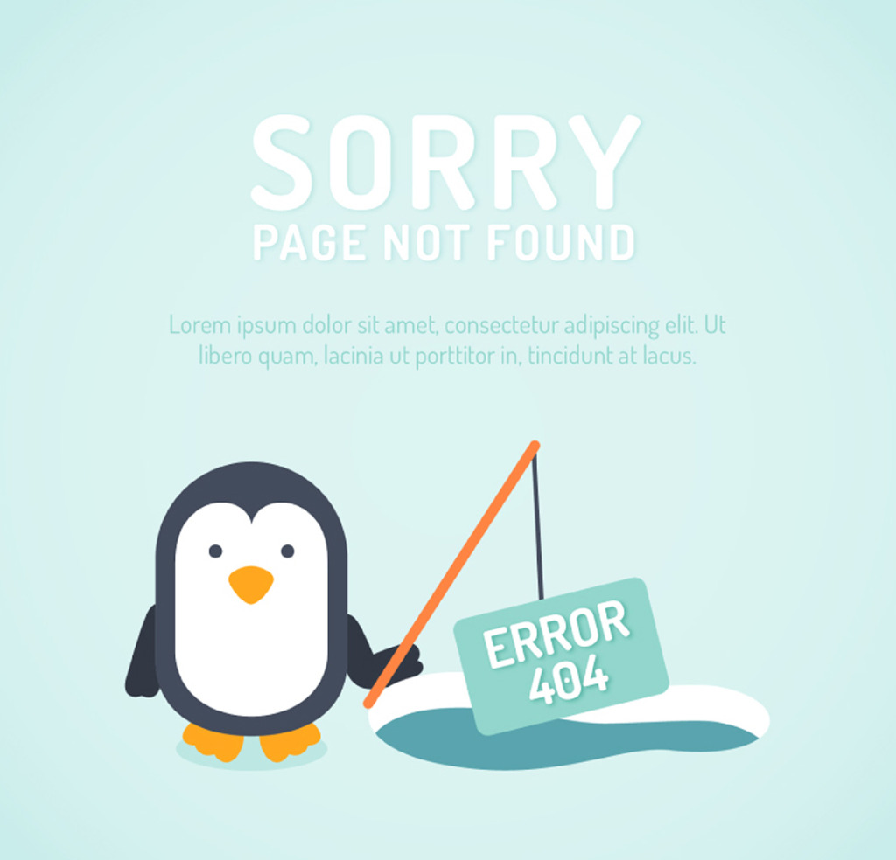

<ion-content  class="padding" style="padding-top: 50px;">
	<div ng-show="dialog" class="dialogBox" style=" z-index: 300; background: white; border: 1px solid gainsboro; width: 100%; padding: 20px 0; position: absolute; top: 100px;">
		<div style=" display: flex;justify-content: space-between;padding: 0 10px;">
			<span>选择理由，优化推荐</span>
			<span ng-Click="shoeOk($event)" class="dialogBtn" style="display: inline-block; width: 100px;text-align: center; background: red; border: none;">{{btnHtml}}</span>
		</div>

		<div class="dialog">

			<div class="d-left">
				<ul>
					<li class="is-select">内容至量差</li>
					<li class="is-select">重复、旧闻</li>
					<li class="is-select">没兴趣</li>
				</ul>
			</div>
			<div class="d-right">
				<ul>
					<li class="is-select">虚假新闻</li>
					<li class="is-select">来源:{{source}}</li>
				</ul>
			</div>
		</div>
	</div>
	<!--下拉刷新-->
	<!--<ion-refresher pulling-text="刷新" on-refresh="doRefresh()"></ion-refresher>-->
	<ion-list  show-delete="shouldShowDelete" show-reorder="shouldShowReorder" can-swipe="listCanSwipe">
		<ion-item  ng-repeat="item in items" class="item-thumbnail-left" href="#/tab/news/{{item.docid}}">
			

			<div style=" width: 130%; ">
				<h2 style="white-space: normal;padding: 0;"> {{item.title}}</h2>

				<div style="display: flex;justify-content: space-between;margin-top: 30px;padding-right: 10px;">
					<span style="font-size: 10px;">{{item.source}}</span>
					<p><span style="font-size: 10px;">跟帖{{item.replyCount}}</span>
						<span style="font-size: 16px;" class="ion-android-close" ng-click="delBrn($event,item)"></span></p>
				</div>
			</div>
		</ion-item>
	</ion-list>
	<!--上拉加载-->
	<ion-infinite-scroll ng-if="isData" on-infinite="loadMore()" distance="1%"></ion-infinite-scroll>
	<div ng-if="!isData">
		
		
		<button class="button-full button button-positive" onclick="javascript:history.go(-1)">返回</button>
	</div>
</ion-content>

